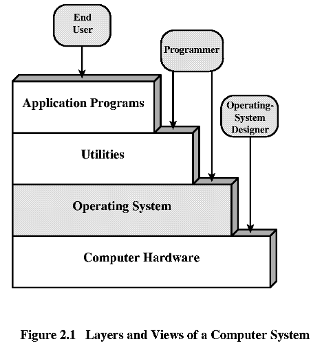
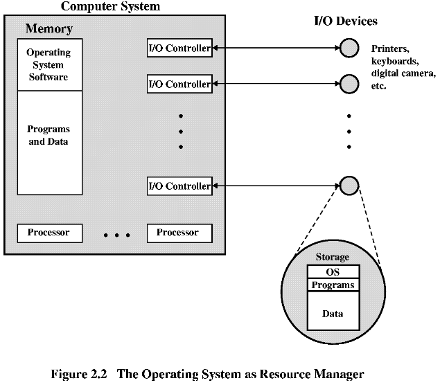
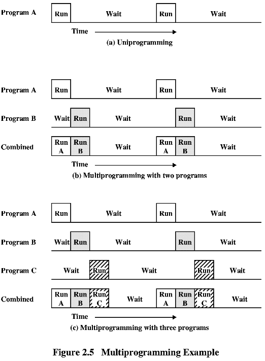
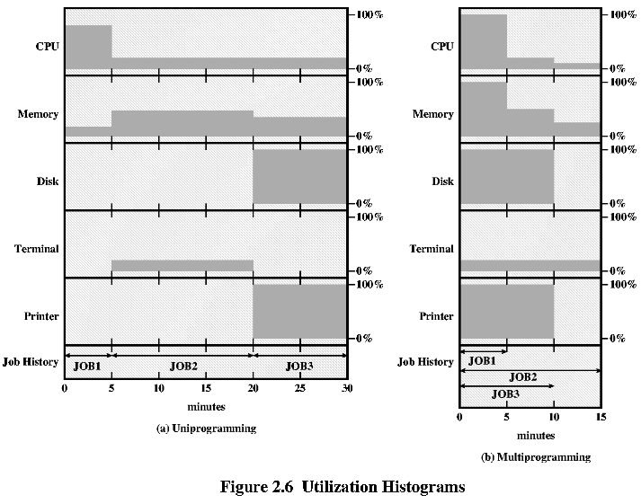
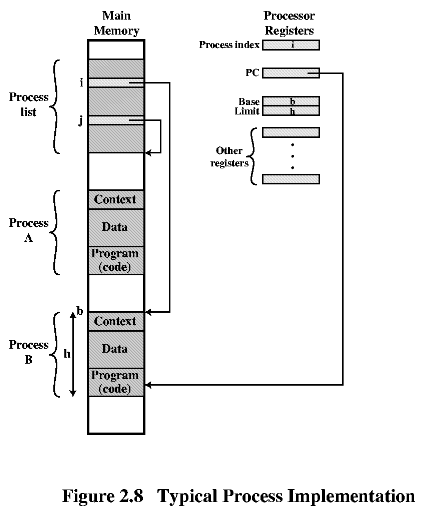
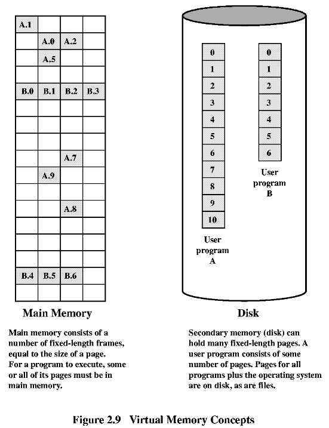
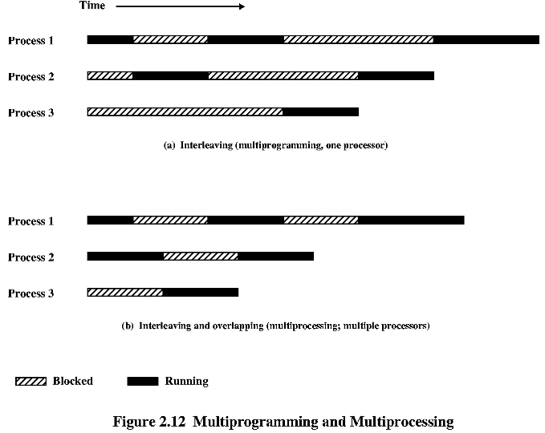

2.1 Цели и функции на операционната система
** ОС като потребител/компютър интерфейс.

Операционната система осигурява следните дейности:
- Създаване на програми - редактори, компилатори, дебъгери;
- Изпълнение на програми - управление на процеси и разпределение на
ресурси;
- Достъп до I/O устройства - драйвери и управление на I/O;
- Управление на достъпа до файлове;
- Достъп до системата - пароли и права на потребителите;
- Откриване и обработка на грешки;
- Статистика.
** ОС като организатор на ресурси.

** Възможност за развитие на ОС.
- нов hardware;
- нови услуги за потребителя;
- отстраняване на грешки в ОС.
|
Натоварване на процесора:
0.0001/0.0031 = 3.2% |

|
 |
| Еднозадачна | Многозадачна | |
| Използване на процесора | 17% | 33% |
| Използване на паметта | 30% | 67% |
| Използване на диска | 33% | 67% |
| Използване на принтера | 33% | 67% |
| Общо време | 30 min | 15 min |
| Производителност | 6 jobs/h | 12 jobs/h |
| Средно време за изпълнение | 18 min | 10 min |
| Многозадачна обработка
(Multiprogramming) |
Времеделение
(Time-Sharing) |
|
| Принципна цел | максимум използване на процесора | минимум време за отговор |
| Вид на командите съм ОС | JCL, командите са със заданието | командите се въвеждат от терминал |
|  |  |
